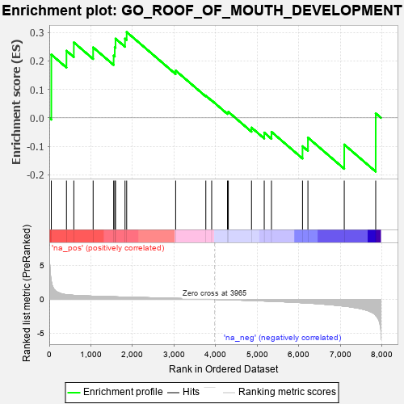
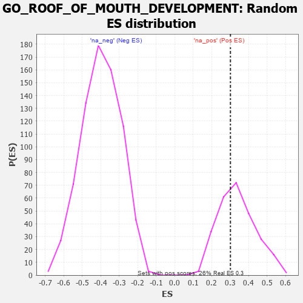

| | | Dataset | 7d |
| Phenotype | NoPhenotypeAvailable |
| Upregulated in class | na_pos |
| GeneSet | GO_ROOF_OF_MOUTH_DEVELOPMENT |
| Enrichment Score (ES) | 0.30165467 |
| Normalized Enrichment Score (NES) | 0.89855605 |
| Nominal p-value | 0.6212121 |
| FDR q-value | 0.8454651 |
| FWER p-Value | 1.0 |
Table: GSEA Results Summary

Fig 1: Enrichment plot: GO_ROOF_OF_MOUTH_DEVELOPMENT
Profile of the Running ES Score & Positions of GeneSet Members on the Rank Ordered List
| PROBE | GENE SYMBOL | GENE_TITLE | RANK IN GENE LIST | RANK METRIC SCORE | RUNNING ES | CORE ENRICHMENT | | 1 | TGFB3 | | | 49 | 2.654 | 0.2224 | Yes |
| 2 | ALX4 | | | 413 | 0.686 | 0.2358 | Yes |
| 3 | ALX1 | | | 590 | 0.598 | 0.2651 | Yes |
| 4 | MEF2C | | | 1054 | 0.473 | 0.2477 | Yes |
| 5 | SOS1 | | | 1547 | 0.384 | 0.2188 | Yes |
| 6 | FZD1 | | | 1574 | 0.379 | 0.2482 | Yes |
| 7 | NPRL3 | | | 1592 | 0.375 | 0.2784 | Yes |
| 8 | SGPL1 | | | 1820 | 0.334 | 0.2785 | Yes |
| 9 | SMAD4 | | | 1860 | 0.326 | 0.3017 | Yes |
| 10 | LEF1 | | | 3037 | 0.144 | 0.1662 | No |
| 11 | SKI | | | 3762 | 0.032 | 0.0779 | No |
| 12 | JAG2 | | | 3903 | 0.010 | 0.0612 | No |
| 13 | WNT11 | | | 4282 | -0.056 | 0.0185 | No |
| 14 | TBX2 | | | 4303 | -0.060 | 0.0211 | No |
| 15 | DLG1 | | | 4860 | -0.169 | -0.0342 | No |
| 16 | TBX1 | | | 5166 | -0.241 | -0.0518 | No |
| 17 | TCF21 | | | 5340 | -0.283 | -0.0493 | No |
| 18 | MMP25 | | | 6086 | -0.501 | -0.0998 | No |
| 19 | SMAD2 | | | 6216 | -0.541 | -0.0694 | No |
| 20 | BBS7 | | | 7089 | -0.988 | -0.0940 | No |
| 21 | DLX5 | | | 7845 | -2.378 | 0.0158 | No |
Table: GSEA details [plain text format]

Fig 2: GO_ROOF_OF_MOUTH_DEVELOPMENT: Random ES distribution
Gene set null distribution of ES for GO_ROOF_OF_MOUTH_DEVELOPMENT